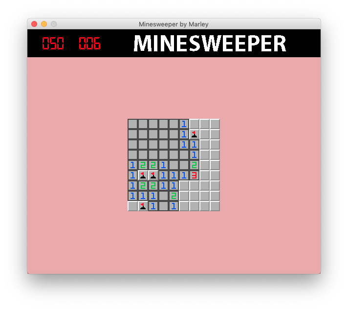

This program was actually a remake of an earlier Minesweeper I made in a language called MonkeyX. I thought I would remake in Python (Pygame) because no one's ever heard of MonkeyX.
It is based on the old-school MS Minesweeper, but with a few little extra bits of polish. It has music, sound effects, minamalist graphics and a "story".
Links: